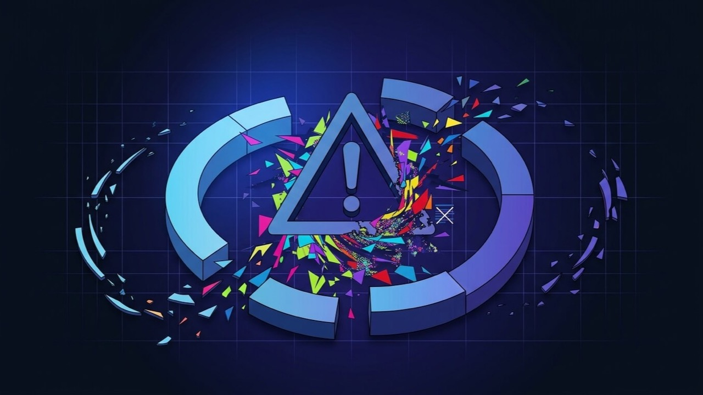

WordPress Broke Right After an Update? Here’s What Actually Happened.
Everything was fine, then a plugin, theme or WordPress core update ran and now something isn’t. That timing isn’t a coincidence — here’s how to find the exact update responsible and reverse it without breaking anything else.

What is the problem?
WordPress, its plugins and its theme are three separately maintained pieces of software running together, and each one updates on its own schedule, written by people who have never seen the other two. Most of the time that works fine. Occasionally a new release changes a function name, a database structure, or an assumption about what else is installed — and whatever depended on the old behavior breaks the moment the update finishes.
Quick answer: something updated, and something else wasn’t written to expect that change. The fix is finding which update it was and either rolling it back, patching the conflict, or updating the other piece to a compatible version — not guessing at unrelated settings.
The failure itself can look like almost anything: a fatal error, a blank page, a layout that collapsed, a plugin that silently stopped working, or a checkout that no longer completes. What ties all of it together is the timing. If it started right after an update ran, the update is the first and most productive place to look, before touching anything else on the site.
Common symptoms
- The site was working normally, then broke within minutes or hours of an update notification, an auto-update, or you manually clicking Update
- A specific feature stopped working — a form, a slider, a payment method — while the rest of the site looks fine
- The visual layout shifted, collapsed, or lost its styling, without any fatal error being shown
- A JavaScript error appears in the browser console that references a script from the plugin or theme that just updated
- The dashboard shows a plugin flagged as needing attention, or an update that failed partway through
- Only one specific page or post type is affected, matching exactly what the updated plugin controls
Why does this happen?
Every plugin and theme is built against a specific, current understanding of WordPress core, PHP, and whatever other plugins it expects to coexist with. An update to any one of those pieces can quietly invalidate that understanding: a function gets deprecated, a hook fires in a different order, a minimum PHP version gets raised, or two plugins that used to coexist peacefully both start trying to control the same thing. None of the individual pieces are necessarily buggy on their own — the break happens specifically in the gap between them.
This is also why the same update can be completely safe on one site and break another: it depends entirely on which other plugins, theme, and PHP version that particular site happens to be running. A generic troubleshooting article can describe the pattern, but confirming the actual cause always comes down to your specific combination.
Common technical causes
- A plugin update dropping support for an older PHP version your host is still running, causing a fatal error the moment the new code executes
- A theme built against an older version of a page builder (Elementor, Divi) that changed its own internal structure in a recent release
- A WordPress core update changing a deprecated function's behavior that an older, less-maintained plugin still relied on directly
- Two plugins updating independently and now conflicting over the same hook, shortcode, or JavaScript library version
- A database schema change shipped with an update that a caching layer or another plugin hadn't accounted for yet
- An update that was itself simply buggy at release and got walked back by the developer within days — rarer, but it happens even to well-known plugins
- A cached version of old CSS or JavaScript being served after the update, making it look broken when the underlying files are actually fine
How to diagnose it
- Check what actually updated, and when. Your host's control panel, WordPress's own update log, or email notifications usually show a timestamp you can line up against when the site broke.
- Clear every layer of cache first. Page cache, object cache, and CDN cache can all serve stale assets after an update and produce symptoms that look exactly like a real conflict.
- Check the browser console and your PHP error log for anything referencing the specific plugin, theme, or file that updated.
- If more than one thing updated at once, deactivate plugins one at a time, starting with whichever updated most recently, retesting after each.
- Search the plugin's own support forum or changelog for the version number involved — a widespread issue in a fresh release is usually reported by other users within hours.
How to fix it, step by step
- Take a backup before changing anything further, so there's a safe point to return to regardless of what the fix turns out to be.
- Confirm the exact update responsible using the timeline and console/error-log evidence from the diagnosis step, rather than assuming based on which plugin seems most likely.
- Roll the specific plugin back to its previous version if a compatible rollback is available, using a version-rollback plugin or a manual re-upload of the prior release from the WordPress.org repository.
- If it's a core update causing the conflict, update the outdated plugin or theme instead of rolling core back, since reversing WordPress core is riskier and rarely the right fix.
- If it's a genuine bug in the new release, check whether the developer has already shipped a patched point release before rolling back, since the fix may already exist.
- Clear all caching layers again once the fix is applied, so you're testing the corrected version rather than a stale cached copy.
- Test the specific feature that broke, not just that the site loads, since a fix that resolves a fatal error doesn't always restore the original functionality on its own.
- Set up a staging copy for future updates if one doesn't already exist, so the next update gets tested somewhere that isn't the live site.
When this needs professional help
A single obvious culprit with an available rollback is often a self-serve fix. It's worth bringing in a developer when:
- Several things updated at once and it isn't clear which one is actually responsible
- Rolling back isn't available and the fix means patching a genuine compatibility conflict directly
- The site is business-critical (an active store, a lead-generation site) and downtime while troubleshooting has a real cost
- The same kind of break keeps happening after routine updates, suggesting a deeper compatibility or hosting problem worth solving properly
- There's no staging environment and you'd rather not experiment on the live site to find the fix
How I can help
This is one of the more common calls I get, and the fastest path through it is almost always reading the actual update log and error output first rather than guessing at which plugin looks suspicious. I identify the specific update responsible, apply the smallest safe fix — a rollback, a compatibility patch, or an update to the other side of the conflict — and set up a staging copy afterward if the site doesn't already have one, so the next update doesn't put you back here.